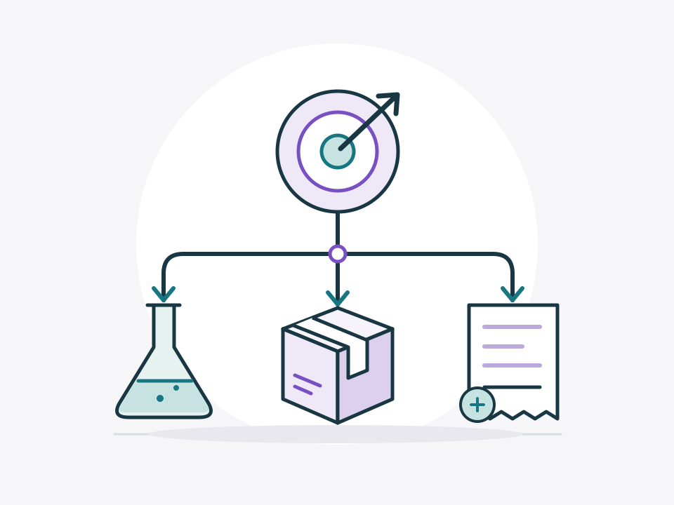
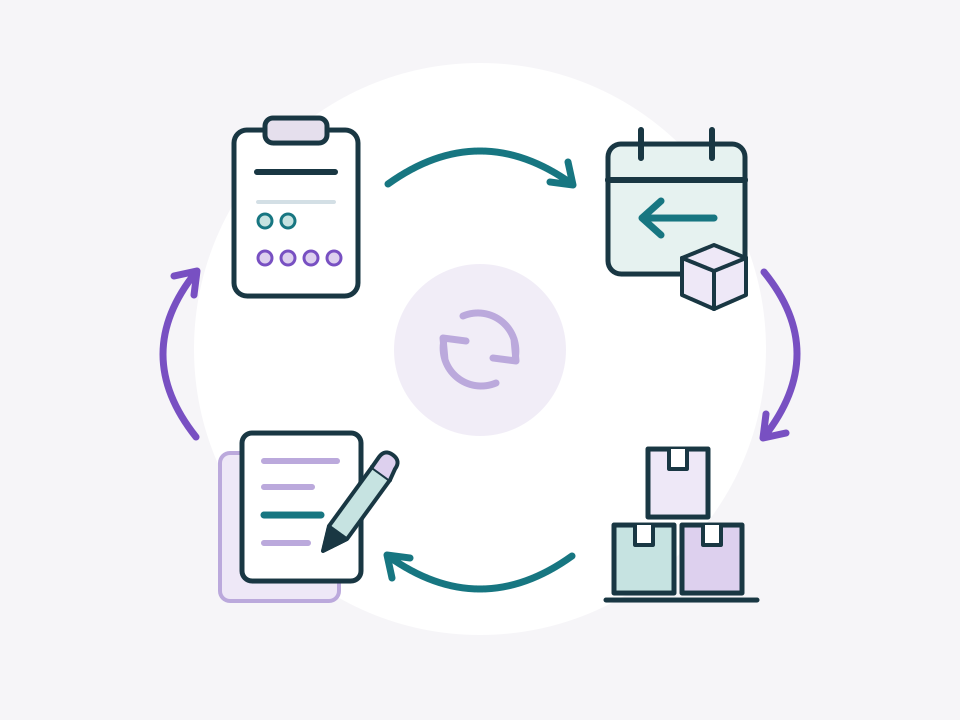

Platform / The concepts behind Decision Lab
Make the parts manageable.
Keep the connections.
We give a decision’s parts explicit meanings, examine their connections, and assess what the complete possibilities support. This map introduces the concepts; each article develops one of them.
Decision Lab combines reusable decision patterns, explicit domain models, and patent-pending reasoning algorithms to help teams examine evidence, compare arrangements, and understand what needs to happen next.
Start with the overview Ways of Thinking About Human Decisions
Explore the concepts

Hierarchical Decomposition for Human Decisions
Divide a complex question into manageable parts while preserving the dependencies that matter when their findings come together.
Shared Structure for Automated Reasoning
Use a shared convention to connect decision approaches, supporting reasoning, workflows and apps. Keep clear what each part is responsible for.

Ontology Engineering for Human Decisions
Define the entities and relationships a decision depends on. Evidence, a technical finding and permission to act have different meanings.

Reasoning Modules for Human Decisions
Organize methods and conditions around a scoped question. Preserve what its answer establishes, depends on and leaves unresolved.
Pattern Languages for Human Decisions
Recognize recurring decision structures and combine reusable approaches that fit the particular problem.

Computational Hermeneutics for Human Decisions
Examine what a claim means in context before another assessment relies on it. Reuse requires compatible meanings, scope and conditions.

Requirements Engineering for Human Decisions
Turn needs and constraints into explicit conditions that complete candidate combinations must satisfy.

Systems Engineering for Human Decisions
Examine how people, equipment and procedures work together toward the purpose of the whole.

Feedback Loops for Human Decisions
Compare what happens with what was expected, then use the observations to reconsider assumptions, methods or requirements.

The Arrangement Problem in Human Decisions
Construct complete candidate combinations and examine their joint compatibility. Individually sensible choices can still conflict when combined.

From Arrangements to Assessments
Define what a candidate represents, how it is evaluated and what conclusion follows. An interpretation, an operating plan and an investigation support different judgments.